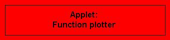

| 
|
|
|
|
| The applet Power series 1 shows the graph of a function resulting from adding up the first 11 terms of a power series. The coefficients can be adjusted by means of scroll bars. Thus it is illustrated how the individual powers contribute to the sum. On demand, some examples of (truncated) power series of given functions are displayed. Since the main goal is to achieve a qualitative understanding, no detailed numerical information may be gained. The applet is started from the red button in its own window. |
|
The applet Power series 2
shows, just like thepreviousapplet, the graph of a function resulting from
adding up the first 11 terms of a power series. However, in contrast to the
previous one, the coefficients can be typed (or read off) in numerically.
Hence, it is better suited for the detailed analysis of particular power
series.
On demand, some examples of (truncated) power series of given functions
are displayed.
The applet is started from the red button in its own window.
It is designed for Netscape Navigator 4 and Microsoft Internet Explorer 4. In Netscape Navigator 3, considerable delay may occur. |
|  You also may use the Function plotter in order to analyze the behaviour of high order polynomials. On account of the hight accuracy achievable with this tool, it is in particular suitable for numerical studies. Clicking the red button calls a web page in a separate browser window, within which the applet is started. |
|
Gallery - Table of contents Maths links: online tools topics collections Welcome Page |